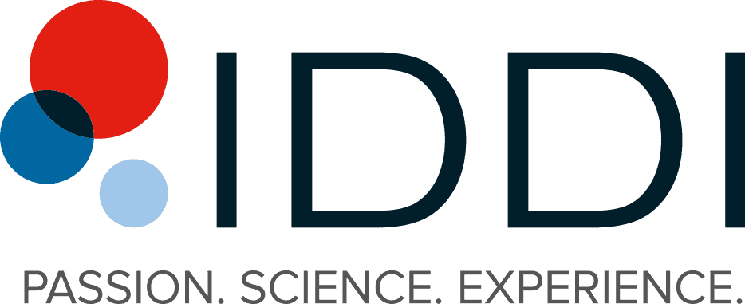
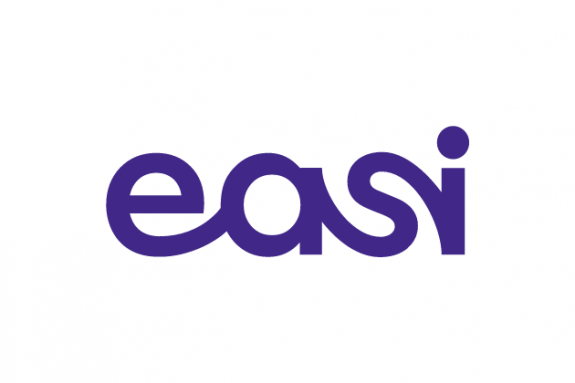
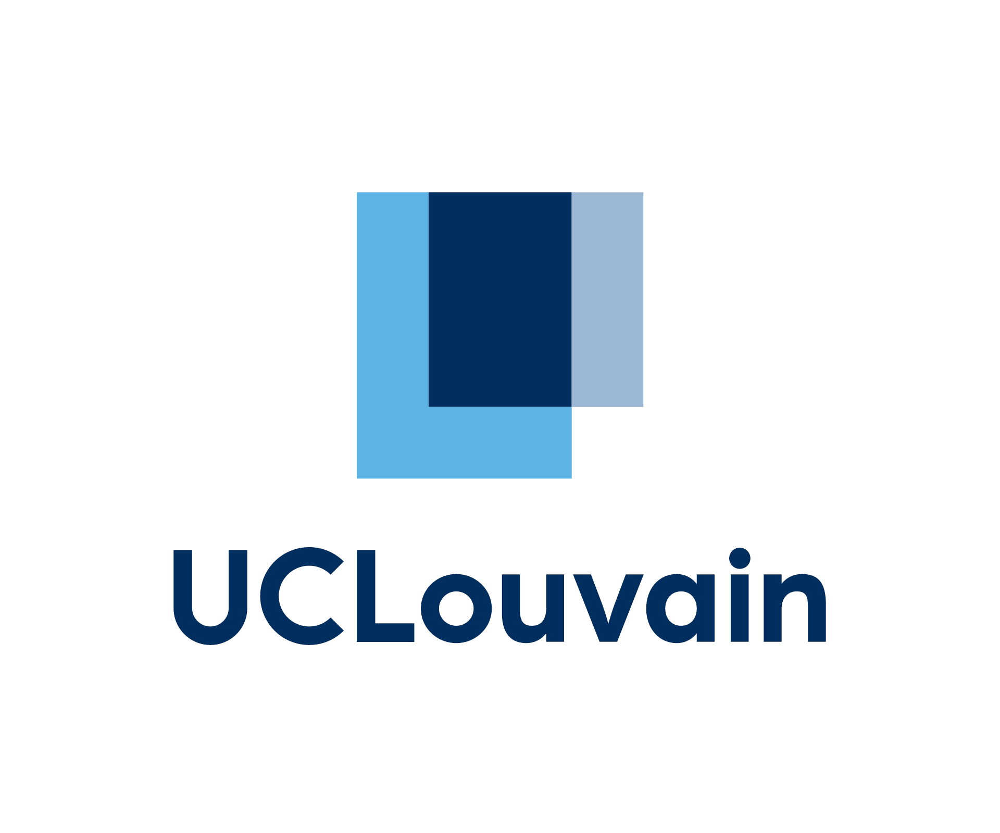
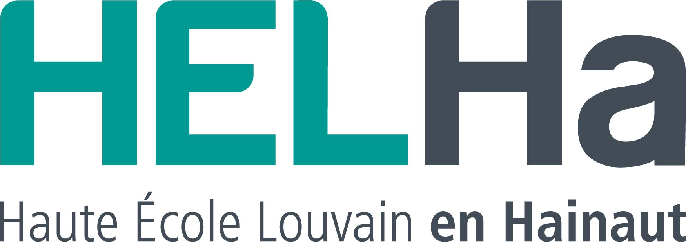
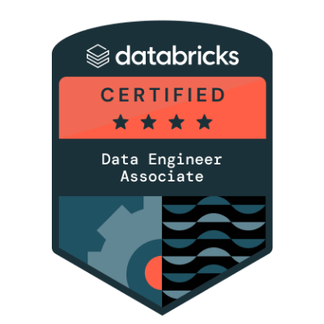

Curriculum Vitae
Résumé professionnel
Data Analyst / BI Developer spécialisé en Power BI, modélisation de données, ETL cloud (Azure / Databricks), reporting orienté business et automatisation des pipelines.
Expériences professionnelles
Data Consultant
Period : July 2018 - Present
Data Scientist
Period : November 2024 - Dec 2025
Summary : As a Data Scientist, the objective of this project was to analyze business processes and requirements and translate them into a functional R or Power BI application. The proposed R solutions were delivered either as automated programs executed via a scheduler or as interactive Shiny applications. Power BI solutions were developed as applications and shared across the company through Power BI Service, ensuring broad accessibility for business users. This initiative aimed to enhance process automation while ensuring full compliance with the bank’s strategic goals and data governance framework. As part of a migration to the cloud, it was also necessary to carry out POCs in Python in order to highlight certain improvements and ensure that the cloud solution would meet business requirements.
Responsabilities :
Functionnal Analyst
Period : July 2022 - August 2024
Summary : As Functional Data Analyst, the goal of this project was to understand the business requirements and translate those needs into functional requirements for developers by using SAS EG as guidelines. In the meantime, I was also responsible for developing TDV views and API’s on OLAP or OLTP servers.
Responsabilities :

Data Engineer
Period : February 2019 - January 2022
Summary : IDDI provides Biostatistics and eClinical Services for clinical trials, with a strong focus on Clinical Data Management programming using SAS. The objective of this project was to deliver high-quality, validated, and FDA-compliant clinical trial data, ensuring full regulatory compliance and data integrity throughout the clinical development process.
Responsabilities :

Consultant
Period : April 2017 - June 2018
Formations

Business Engineering
Period : 2011 - 2016

Chemistry
Period : 2010 - 2011
Certifications

Databricks Certified Data Engineer Associate
Issued : Apr 2026
Microsoft Certified: Fabric Analytics Engineer Associate
Issued : Jan 2026
Microsoft Certified: Fabric Data Engineer Associate
Issued : Jan 2026
Microsoft Certified: Power BI Data Analyst Associate
Issued : Oct 2024
Microsoft Certified : Azure Data Engineer Associate
Issued : Oct 2024
SAS Certified Statistical Business Analyst Using SAS 9: Regression and Modeling
Issued : Mar 2022
SAS Certified Professional: Advanced Programming
Issued : Feb 2022
SAS Certified Base Programmer for SAS 9
Issued : Jan 2019